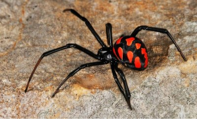
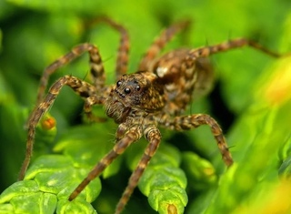
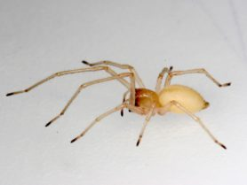

1. Каракурт или черная вдова
Особо опасен его яд для стариков и детей.
Обитает он на местностях с относительно
теплым климатом, хотя летом вполне может
мигрировать на север. Часто встречается в
причерноморских областях, на Южном Урале, Кавказе.
Самыми опасными для человека считаются самки.
Во-первых, они намного крупнее самцов: могут
достигать размера до 2 см. Во-вторых, они
более агрессивны, а потому чаще нападают на людей.
Каракурт обладает яркой окраской,
которая призвана указывать на его
ядовитость. Хищники, увидев яркие алые
пятна на брюшке, предпочитают обходить
стороной членистоногое. Снизу на брюшке
животного можно рассмотреть оранжевое
пятно, похожее на песочные часы.

2. Мизгирь\южнорусский тарантул\паук-волк
Обитает он в пустынях, полупустынях и степях.
Самки достигают 4 см длиной, они значительно
крупнее самцов. Окрас варьируется от коричневого до рыжеватого.
Этот вид не плетет паутину.
Он роет глубокие норы.
На жертву мизгирь нападет из засады
– выпрыгивает из норки и впивается клыками.
Не зарегистрировано ни одного летального случая,
вызванного укусом мизгиря.
Однако яд членистоногого имеет
достаточно высокую токсичность.
Место, которое было укушено, сильно
опухает и краснеет. Человек испытывает
сильную боль. Возможны и более серьезные
последствия вследствие возникновения
аллергической реакции на яд.

3. Хеиракантиум фаланга
Входит в список самых опасных пауков в России.
Считается самым ядовитым на территории средней
полосы. Его укус может быть смертельно-опасным,
только если у человека появится аллергическая
реакция на яд этого вида. Пострадавшего ждут
сильная боль, высокая температура, тошнота,
покраснение и отек пораженного места.
Размер членистоногого достигает 50-100 мм.
Имеет светлую бежевую или желтоватую окраску.
Любит прятаться в ветвях деревьев и под листвой.
Атаковать человека может в целях самозащиты.
Более активен ночью, когда выходит на
охоту. Хеиракантума привлекает запах
бензина, поэтому его можно встретить
у нефтеперерабатывающих предприятий.

4. Сумочный паук или мешочник
В список опасных пауков России также часто вносят мешочника.
Его можно встретить в Ростовской и Волгоградской областях.
Любит теплый сухой климат, летом способен мигрировать на
север. Длиной в размахе лап достигает 2 см. Имеет светлый
окрас. На брюшке две длинные светло-желтые полосы.
Мешочник не сильно токсичен,
но очень агрессивен. Особо опасны
самки, которые защищают свой кокон.
Членистоногое очень быстро бегает и
довольно высоко прыгает.
В случае укуса у человека повышается
температура тела, появляется тошнота и
ощущения сильной боли не только в районе
укуса, но и на больших участках тела.
Иногда укус может привести к появлению некроза тканей.